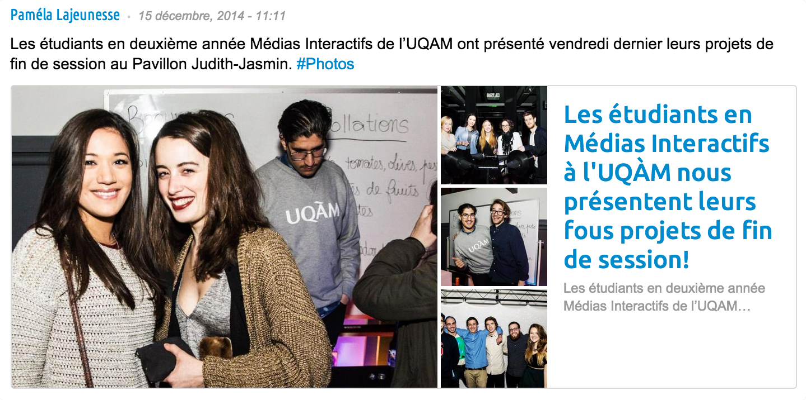

Recréant l’univers ludique des premiers dessins animés, Anakronysm vous propose un saut dans le temps, permettant à chaque utilisateur de devenir un projectionniste du début du 20e siècle en utilisant la technologie d’aujourd’hui.
Le vernissage du projet a eu lieu le vendredi 12 décembre de 17h à 21h au Pavillon J.-E. de l'UQÀM.
Article de NIGHTLIFE.CA
